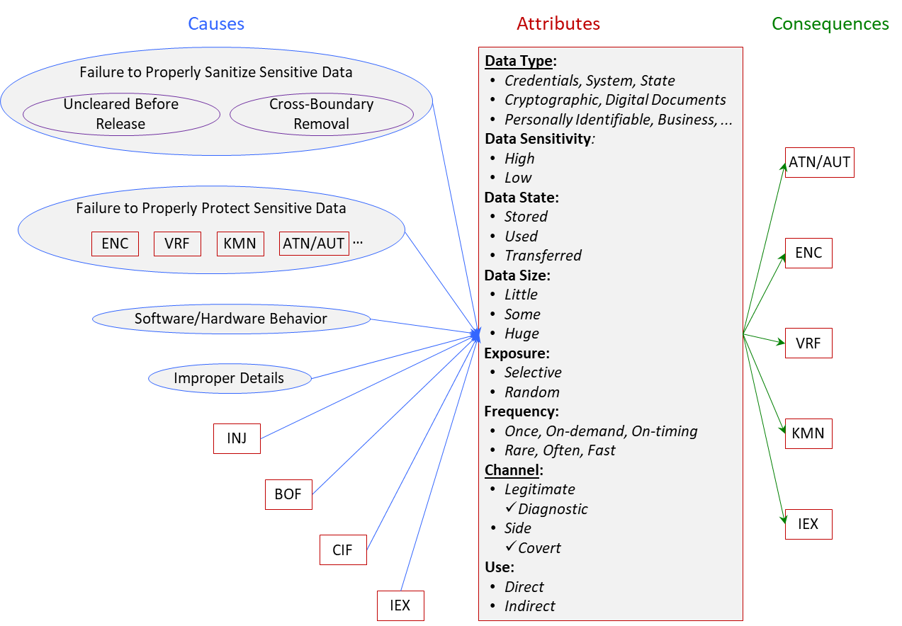

Information Exposure (IEX) Class
Definition
We define Information Exposure Bugs (IEX) as:
The software allows leak of information/data through legitimate or side/covert channels.
Note that the terms data and information are often used interchangeably. Data is “a set of values of qualitative or quantitative variables” [1]. Information is “any entity or form that provides the answer to a question of some kind or resolves uncertainty" [2]. To what extent data is informative to someone depends on to what extent it is unexpected by that person.
Note that exposure is to an entity that should not have it, not necessarily due to a security concern.
IEX is related to: BOF, INJ, CIF, ENC, VRF, KMN, TRN, PRN.
Taxonomy
The causes, attributes and consequences of the Information Exposure Bugs (IEX) class are depicted and explained below.

Information Exposure (IEX) Class - click on image for detailed view.
Attributes
- Information/Data – Credentials, System Data, State Data, Cryptographic Data, Digital Documents, Personally Identifiable Data, Corporate Data, etc.
Credentials, System Data, State Data, Cryptographic Data, Digital Documents must be encrypted when stored or transferred (see ENC). Credentials include Password, Token, Smart Card, Digital Certificate, Biometrics
(fingerprint, hand configuration, retina, iris, voice.) System Data could be pathnames, configurations, logs, Web usage. State data includes ooperational data, such as SQL table names and column names, ports used, server names. Cryptographic Data is hashes, keys, keying material. Keying material is cryptographic
keys, initialization vectors, shared secrets, domain parameters, random bits (seeds,
salts, nonces).
Personally Identifiable Data corresponds to Personally Identifiable Information (PII)
and Personally Identifiable Financial Information (PIFI). PII is any information/data that could be used to distinguish one person from another – e.g. social security number (SSN), driver’s license number, identification card number. PIFI includes financial account numbers with security codes/ access codes/ password. Related to PII and PIFI are also Protected Health Information (PHI) and Payment Card Information (PCI). PHI includes any part of a patient's medical record or payment history. PCI includes cardholder name, service code, expiration date, CVC2/ CVV2/ CID value, PIN or PIN block, content of magnetic stripe, etc.
Business Data covers intellectual property & trade secrets, operational & inventory data, industry
specific data, and also PII and PCI customer data and PII employee data.
This indicated the sensitivity level of leaked information/data. Highly sensitive information/data must be encrypted when stored or transferred (see
ENC) – e.g. credentials or SSNs. Some information/data is non-sensitive, and exposure would not result in harm – e.g. such from public records, phone books,
online directories.
- Data State – Stored, Used, Transferred.
This reflects if data is in rest, in use, or in transit. Data can be in rest in files (e.g. ini, temp, configuration, log server, debug, cleanup, email attachment, login buffer, executable, backup, core dump, access control list, private data index), directories (Web root,
FTP root, CVS repository), on discs. Data can be in use by functions/programs -- source code (incl. comments);
threads, registries, cookies, , GUI, environmental variables. Data can be also in transit between processes or over a network.
- Data Size – Little, Some, Huge.
This indicates how much information/data is leaked.
As in magnitude, these distinctions are important in some cases. For instance, Heartbleed [3] might not have been a severe problem if it just exfiltrated a little data. The fact
that it may exfiltrate a huge amount of data greatly increases the chance that very
important information will be leaked.
- Exposure – Selective, Random.
This reflects if an attacker can choose what and where to be exposed. Selective means the attacker can choose where and what to read. Random would be like going through the trash (e.g. heartbleed [3]).
- Frequency – Once, On-demand, On-timing, Rare, Often, Fast.
This shows how often the exposure can/does occur. On-timing means depending on timing (e.g. in race condition). Note that Frequency * Size = Rate.
- Channel – Legitimate, Side, Covert.
This indicates the medium by which information/data was leaked.
A legitimate channel is designed to be used by functions, programs, sessions, etc. to transmit information. Information may leak when either unintended information is carried, or an unintended recipient gets the information either accidentally or because of an attacker's actions. Information/data may leak via queries (incl. query strings in GET request), hardcoded information (password, cryptographic key, etc.), error messages, exception message, process environment, cleanup, class cloning, serializable class, public method accessing private variable, etc. Cleanup includes removing previously used information, buffer cleanup (dead store removal), use of realloc() – not removed from memory, etc. Sessions may leak information/data via session-ID length, sessions state boundaries, caching, cleanup.
A side channel is not intended to transmit information; however, it does transmit information [4]. A covert channel is an intentionally created hidden communication channel [5] – it is a special kind of a side channel, where the attacker controls both the part that induces the side effect and the part that measures it [6]. Side and covert channels allow information to be revealed and/or deduced due to discrepancies/behavioral inconsistencies – conveying different responses (e.g. an operation is successful or not), taking different time (e.g. CPU timing), consuming different power, using different storage, emitting different electromagnetic radiation, etc. Behavioral inconsistency could be internal or external. Covert channel attacks most commonly use Trojan horses. Examples of side channel attacks are Meltdown [7], Spectre [
7], as well as the inference attacks [8].
Direct means leaked information/data is valuable on its own. Indirect means it is useful for launching other attacks.
Causes
In the graph of causes: Uncleared Before Release means information/data going from one control sphere back to the general pool. Cross-Boundary Removal means information/data going from one control sphere to another control sphere. Where, a control sphere is a set of resources and behaviors that are accessible to a single actor, or a group
of actors that all share the same security restrictions [9].
Protect Sensitive Data covers also prepare sensitive data
Software/Hardware Behavior covers algorithms/execution, which observable behavior
(time, power, cache lines) dependents on the data.
Improper Details cover including passwords, paths, SQL query structure/logic, etc.
in error/exception, etc. messages.
ENC includes failure to encrypt (cleartext storage, recoverable format storage, cleartext
transmission) and failure to properly encrypt (inadequate encryption strength, use
of risky/broken cryptographic algorithm, missing required cryptographic step, use
of hard-coded cryptographic key).
ATN/AUT includes improper authentication, credentials compromise, account access.
INJ includes add command and mask legitimate command/information.
Related CWEs and SFP
- CWEs related to IEX are CWE-8, CWE-11, CWE-13, CWE-200, CWE-201, CWE-202, CWE-203, CWE-204, CWE-205, CWE-206, CWE-207, CWE-208, CWE-209, CWE-210, CWE-211, CWE-212, CWE-213, CWE-214, CWE-215, CWE-226, CWE-244, CWE-260, CWE-359, CWE-377, CWE-385, CWE-402, CWE-403, CWE-433, CWE-488, CWE-492, CWE-495, CWE-497, CWE-498, CWE-499, CWE-524, CWE-514, CWE-515, CWE-525, CWE-527, CWE-528, CWE-529, CWE-530, CWE-532, CWE-535, CWE-536, CWE-537, CWE-538, CWE-539, CWE-540, CWE-541, CWE-546, CWE-548, CWE-550, CWE-552, CWE-555, CWE-598, CWE-612, CWE-615, CWE-642, CWE-651, CWE-668.
- The only related SFP cluster is SFP Primary Cluster: Information Leak.
References
[2] https://en.wikipedia.org/wiki/Information
[3] http://heartbleed.com/
[9] https://cwe.mitre.org/documents/glossary/index.html#Control Sphere